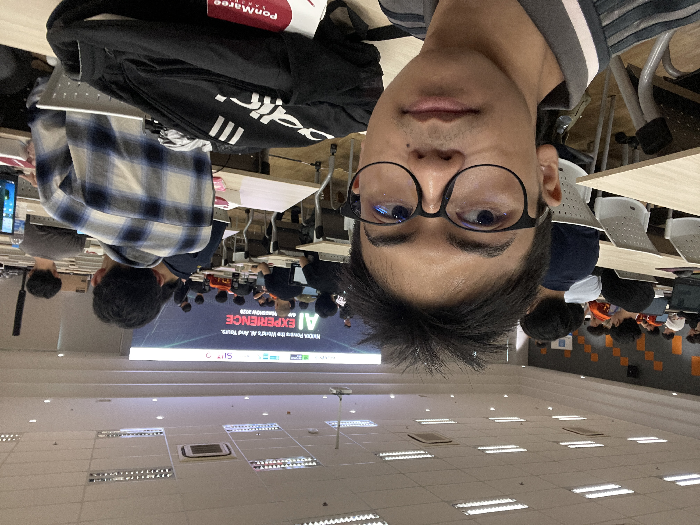

ปัญหาและความท้าทายที่พบ
ปัญหาสำคัญคือการจัดระเบียบองค์ประกอบให้ดูสมดุลและสวยงาม รวมถึงการจัดเมนูให้อยู่ในแถบเดียวกัน วิธีแก้ไขคือศึกษาการใช้ CSS + ให้ Ai ช่วยและทดลองปรับค่าต่างๆผ่าน Live Preview แบบ real-time
สวัสดีครับ ผมเป็นนักศึกษาที่สนใจ การพัฒนาเว็บ และ ออกแบบประสบการณ์ผู้ใช้ (UX/UI) งานอดิเรกคือการเล่นเกมและฟังเพลง
Overview: สร้างเว็บไซต์ Portfolio ส่วนตัวแบบหน้าเดียว (Single-page) ด้วย HTML และ CSS เบื้องต้น เพื่อแสดงข้อมูลส่วนตัวและผลงานการเรียนรู้
Overview: เข้าร่วมงานสัมมนาและกิจกรรม Roadshow ที่จัดขึ้นในมหาวิทยาลัย เพื่ออัปเดตเทรนด์เทคโนโลยี AI ล่าสุด และสัมผัสประสบการณ์การใช้งานฮาร์ดแวร์ที่ออกแบบมาเพื่อรองรับ AI อย่างเต็มประสิทธิภาพ
Evidence:

เว็บไซต์นี้คือ Learning Portfolio แบบ single-page โดยมีเนื้อหาหลัก ได้แก่ Navigation, ข้อมูลส่วนตัว, รายละเอียดโครงการ, ขั้นตอนการทำงาน, และสิ่งที่ได้เรียนรู้
เมื่อเปิดไฟล์เว็บไซต์นี้จากเครื่องคอมพิวเตอร์ตนเอง (ดับเบิลคลิกไฟล์ index.html)
ยังไม่เกิดการทำงานระหว่าง Client และ Server
เหตุผลคือเว็บเบราว์เซอร์ทำหน้าที่อ่านไฟล์ HTML/CSS จากฮาร์ดดิสก์ผ่านข้อกำหนด file://
โดยตรง
(เบราว์เซอร์ทำงานเป็น Client ฝั่งเดียวในการประมวลผลไฟล์) โดยไม่ได้ส่ง Request ผ่านโปรโตคอล
HTTP/HTTPS ไปยัง Web Server
ขั้นตอนการทำงาน:
style.css ตกแต่งหน้าตา จัดวาง layoutปัญหาสำคัญคือการจัดระเบียบองค์ประกอบให้ดูสมดุลและสวยงาม รวมถึงการจัดเมนูให้อยู่ในแถบเดียวกัน วิธีแก้ไขคือศึกษาการใช้ CSS + ให้ Ai ช่วยและทดลองปรับค่าต่างๆผ่าน Live Preview แบบ real-time
เข้าใจความสำคัญของการใช้ Semantic HTML ที่ช่วยให้โครงสร้างโค้ดอ่านง่าย เป็นระเบียบ และดีต่อการเข้าถึงมากกว่าการใช้ div ทั้งหมด
อยากเพิ่มการรองรับบนมือถือ และเพิ่มลูกเล่นเช่น Animations ด้วย CSS เพื่อให้หน้าเว็บมีความน่าสนใจยิ่งขึ้น